CoaXPress Camera Manual
E2V CMOS Sensor Camera
HX-E671M(K)-65 / HX-E361M(K)-43
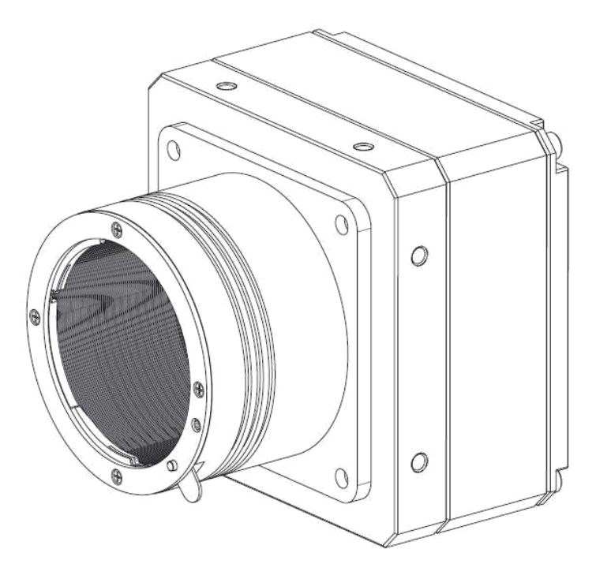
1. 준비하기
1.1 필수 준비 요소
▶ CoaxPress V2.0 프로토콜을 지원하는 Frame Grabber 가 필요합니다.
▶ Frame Grabber 가 하기 사양을 충족하지 못하는 경우 연결이 안될 수 있습니다.
- CoaxPress CXP-12 / 4-Channer or more
- GenApi V3.2 or higher, plus
- SFNC V2.5 or higher
1.2 SDK
▶ 카메라는 프레임그래버 제조사에서 제공하는 SDK 를 이용하여 카메라 연결 및 설정이 가능합니다.
1.3 주의사항
▶ 동작 온도 : 0℃ ~ +45℃ 주변 온도 변화에 따라 데이터 출력이 변할 수 있으므로 일정하게 온도를 유지하십시오.
▶ 누수 및 습기 주의 제품 자체에 방수 기능이 없으므로 지나친 습기에 노출되지 않도록 주의하셔야 합니다.
▶ 자기장 및 전기장 입출력신호가 고속의 미소 전압 및 전류로 강한 자기장 및 전기장에 노출되면 신호의 왜곡을 일으킬 수 있으므로 주의하셔야 합니다.
▶ 환기 소비전력은 사용환경에 따라 차이가 나지만 전력 소비량이 높으므로 제품 주변을 밀폐시키거나 공기흐름을 차단하지 말고 통풍성을 유지하여야 합니다.
▶ 초기동작 상태 Camera 와 FrameGrabber 에 Cable 4 개 모두 연결된 상태에서 SDK 를 실행해야 합니다.
▶ 제품성능은 Cable 특성에 따라 달라질수 있습니다.
▶ CE 규격을 준수하기 위해서는 표준 CoaxPress™ Cable 또는 동급 이상의 Shield 특성이 좋은 케이블을 사용해야 합니다. ( 추천 Cable : Belden 1694A cable)
▶ 이 제품은 제품의 기능 및 성능 개선을 위해 예고없이 수정될수 있습니다.
2. 제품 사양
2.1 제품 개요
▶ High Speed & High Resolution 36/67M TELEDYNE E2V CMOS Image Sensor
▶ Global Electronic Shutter
▶ CoaxPress2.0 Interface
▶ PoCXP Support
▶ Supported CoaxPress Channels
- HX-E671M(K)-65 : CXP12 x 4Ch
- HX-E361M(K)-43 : CXP12 x 4Ch, CXP12 x 2Ch, CXP6 x 4Ch
▶ ROI Scan
▶ Freerun / Trigger Mode
▶ Strobe Output
▶ Flat Field Correction
▶ Defect Pixel Correction
▶ Gain Control
▶ Black Level Control
▶ ExposureAuto
▶ GainAuto
▶ BalanceWhiteAuto
▶ NoiseReduction
▶ TestPattern
▶ LUT Control
2.2 주요 사양
| Spec. | HX-E671M(K)-65 | HX-E361M(K)-43 |
|---|---|---|
| Sensor Type | EMERALD 67M | EMERALD 36M |
| Pixel Size | 2.5um x2.5um | 2.5um x 2.5um |
| Optical Foramt | APS-C | Four Thirds |
| Active Pixels | 8192 x8192 | 6144 x 6144 |
| PixelClockFrequence | 75.4MHz | |
| Max Frame Rate (Full Resolution /CXP12) | 65fps at12.5Gbps with 4Ch | 43fps at12.5Gbps with 4Ch |
| ExposureTime(step :1us) | InternalExposureOffset4.61 us +UserSettingMin.3us~/ActualExposureMin.7.61us~ | |
| Scanning Method | Full /ROI(Horizontal+Vertical) /Reverse(X,Y,All) | |
| Sync. System | Internal(Freerun), External(CXP orCircular),Software trigger via PC | |
| Exposure Mode | Timed(Fixed),Trigger Pulse Width | |
| Shutter | Global Shutter | |
| GainAbs | Analog :x1~x3.99/Digital :x1~x4 | |
| Black Level | Digital :0~1024(10bit) | |
| Auto White Balance | Off /Once /Continuous | |
| Auto Gain/Exposure | Off /Once /Continuous | |
| ROI | Horizontal /Vertical Single ROI | |
| Video I/F | CoaxPress /Micro-BNC | |
| Video Format | Mono :Mono8, Mono10 Color :Bayer8,Bayer10,RGB8 | |
| Communication | CoaxPress Standard | |
| SNR | 36dB | 37dB |
| Function Control | GainAuto, ExposureAuto, BalanceWhiteAuto, Acquisition Frame Rate(Adjustable), Defect Pixel Correction, Noise Reduction Shading Correction(FFC) | |
| Lens mount | F-mount | |
| Power Supply | PoCXP(Two PoCXP cables required) | |
| Consumption | PoCXP | |
| Weight | 461g | |
| Dimension | 80x80 x44.14 ㎜ (Without Connector) | |
| Operating /Storage | 0℃ ~+45℃ (with <20~80% RH) /-20℃ ~+60℃ | |
| Vibration /Shock | 98m/s2(10.0 G)/196 m/s2(20.0 G) | |
| Standard Compliancy | CE (EN61326-1; 2013; Class A) | |
| Environments | RoHS /WEEE |
3. 카메라 외관 사양
3.1 Appearance
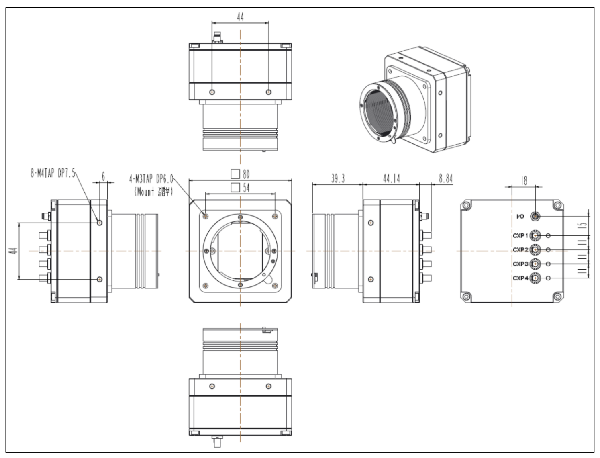
3.2 LED Indicator Status
| State | Indication |
|---|---|
| No power | Off |
| System booting | Solid orange |
| Powered, but nothing connected | Slow pulse red |
| Connection detection in progress, PoCXP active | Fast flash alternate green / orange |
| Connection detection in progress, PoCXP not in use | Fast flash orange |
| Device / Host connected, but no data being transferred | Solid green |
| Device / Host connected, waiting for event | Slow pulse orange |
3.3 Back Panel
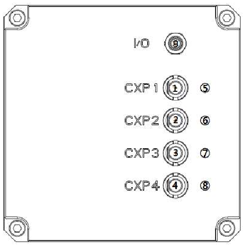
| NO. | Name | Description |
|---|---|---|
| 1 | CoaxPress Connector 1 | MicroBNC Type |
| 2 | CoaxPress Connector 2 | MicroBNC Type |
| 3 | CoaxPress Connector 3 | MicroBNC Type |
| 4 | CoaxPress Connector 4 | MicroBNC Type |
| 5 | LED Indicator 1 | LED |
| 6 | LED Indicator 2 | LED |
| 7 | LED Indicator 3 | LED |
| 8 | LED Indicator 4 | LED |
| 9 | I/O Connector | 4 Pin Circular Connector |
3.4 CoaxPress Connector
CoaxPress 는 플러그 앤 플레이로 카메라를 자동감지 합니다.
카메라는 동축케이블을 통해 최대 12.5Gbps 로 Framegrabber 에 데이터를 전송 합니다.
PoCXP 를 지원하는 경우 Framegrabber 에서 동축 케이블을 통해 카메라에 전원을 공급하게 됩니다.
| Channel | Maximum Bit Rate | Connection Type | PoCXP Support |
|---|---|---|---|
| Connector 1 | 12.5Gbps | Master | Yes |
| Connector 2 | 12.5Gbps | Extension | Yes |
| Connector 3 | 12.5Gbps | Extension | No |
| Connector 4 | 12.5Gbps | Extension | No |
3.5 External I/O Connector
4 pin Circular Connector
| No. | Name | IN/OUT | Description |
|---|---|---|---|
| 1 | Line 2 | IN/OUT | Direct IO, 3.3V |
| 2 | DGND | IN | Direct IO GND |
| 3 | Line 3 | IN/OUT | Direct IO, 3.3V |
| 4 | DGND | IN | Direct IO GND |
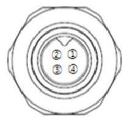
3.6 External I/O 내부 회로
- Line2, Line3(Direct I/O)
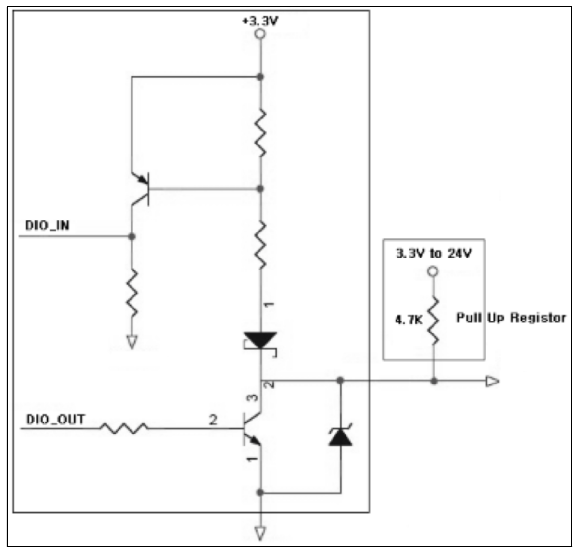
4. 카메라 기능
4.1 Image Format Control
4.1.1 Single ROI (Single Region Of Interest) : ROISingle Mode
※ HX-E671M(K)-65
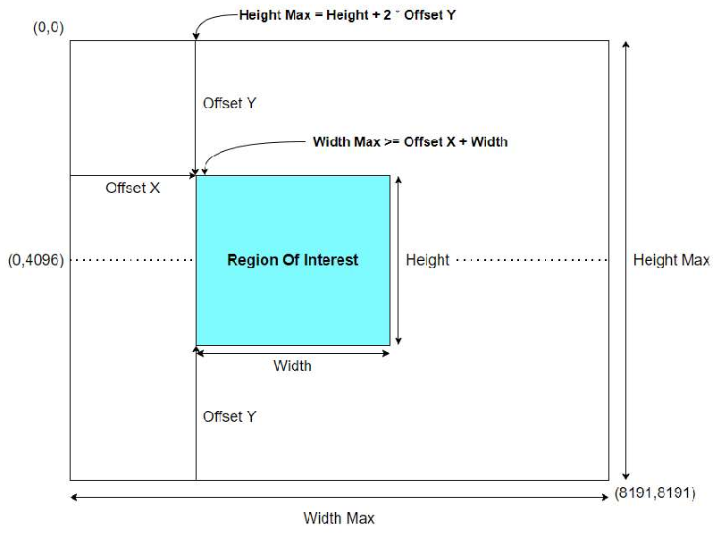
< 그림 1 - HX-E671M(K)-65 Single ROI Setting >
| XML Parameters | Description | |
|---|---|---|
| Image Format Control | ROIMode | ROISingle, ROIRow Mode 를 선택 |
| WidthMax (1) | 카메라의 최대 Width 값 | |
| HeightMax (2) | 카메라의 최대 Height 값 | |
| Width (1) | 이미지의 Width 값 | |
| Height (2) | 이미지의 Height 값 | |
| OffsetX (1) | 이미지 ROI 영역의 Horizontal Offset 값 | |
| OffsetY (2) | 이미지 ROI 영역의 Vertical Offset 값 | |
(1) Offset X + Width 는 Width Max 를 넘을 수 없습니다.
(2) Height 값은 Height Max = 2 * Offset Y + Height 식을 따르며 값 입력 시 자동 변경됩니다.
- Width, Height, Offset X, Offset Y 를 설정하여 지정된 영역의 이미지를 흭득할 수 있습니다.
- 설정한 ROI 의 Height 중간값은, Full ROI 영역의 중간인 4096 으로 고정됩니다.
- 이미지의 사이즈가 작아질수록 Max.fps 가 증가합니다. (ROI 별, Max.Fps 는 Appendix A 참조)
※ HX-E361M(K)-43
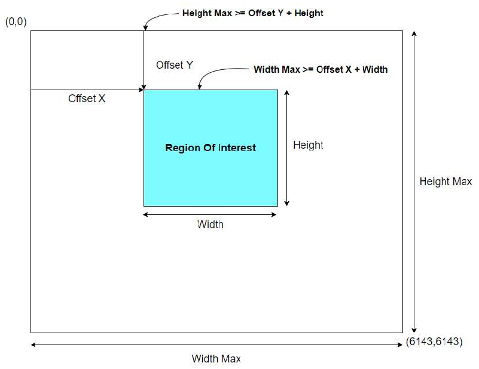
< 그림 2 - HX-E361M(K)-43 Single ROI Setting >
| XML Parameters | Description | |
|---|---|---|
| Image Format Control | ROIMode | ROISingle, ROIRow Mode 를 선택 |
| WidthMax (1) | 카메라의 최대 Width 값 | |
| HeightMax (1) | 카메라의 최대 Height 값 | |
| Width (1) | 이미지의 Width 값 | |
| Height (2) | 이미지의 Height 값 | |
| OffsetX (1) | 이미지 ROI 영역의 Horizontal Offset 값 | |
| OffsetY (2) | 이미지 ROI 영역의 Vertical Offset 값 | |
(1) Offset X + Width 는 Width Max 를 넘을 수 없습니다.
(2) Offset Y + Height 는 Height Max 를 넘을 수 없습니다.
- Width, Height, Offset X, Offset Y 를 설정하여 지정된 영역의 이미지를 휙득할 수 있습니다.
- 사이즈가 작아질수록 Max.fps 가 증가합니다. (ROI 별, Max.Fps 는 Appendix A 참조)
- 모델별 ROI Width , Height 는 아래 특성을 가집니다.
| Model | Mininum Width | Mininum Height | Width Unit | Height Unit |
|---|---|---|---|---|
| HX-E671M(K)-65 | 32 | 8 | 16 | 4 |
| HX-E361M(K)-43 | 32 | 8 | 16 | 4 |
< Table 1 Mininum & Unit Size of ROI >
4.1.2 Multiple ROI (Multiple Region Of Interest) : ROIRowMode
※ HX-E671M(K)-65
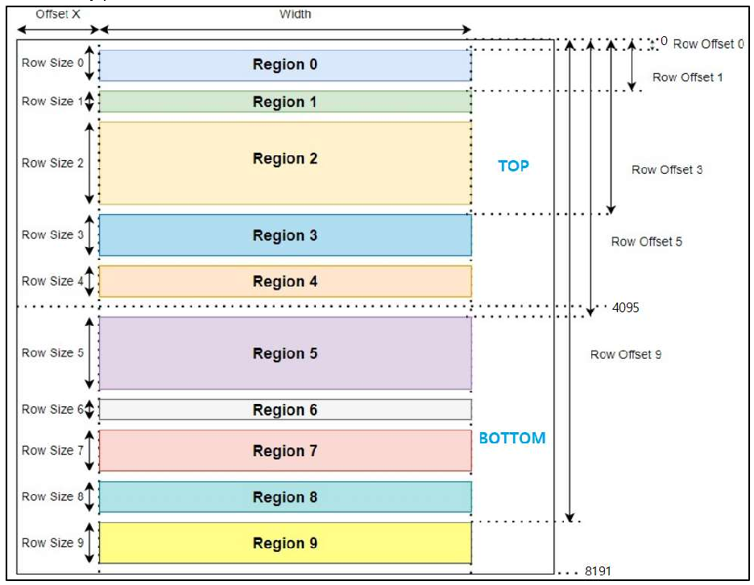
< 그림 3 - HX-E671M(K)-65 Multiple ROI Setting >
| XML Parameters | Description | |
|---|---|---|
| Image Format Control | ROIMode | ROISingle, ROIRow Mode 를 선택 |
| Width (1) | 이미지의 Width 값 | |
| OffsetX (1) | 이미지 ROI 영역의 Horizontal Offset 값 | |
| ROIRowSelector (2) | 이미지의 Region Selector(Top: 0~4, Bottom: 5~9) | |
| ROIRowSize (3) | 해당 Region 의 Height 값 | |
| ROIRowOffset (3) | 해당 Region 의 Vertical Offset 값 | |
| ROIConfigResult (4) | Mutiple Region Config Result(Success, Fail) | |
(1) OffsetX, Width 값을 조정하여 전체 Region 의 OffsetX, Width 값을 조정할 수 있습니다.
(2) ROIRowSelector 를 통해 총 10 개(Top:0~4, Bottom:5~9) Region 을 선택하여 각 Region 의 Size, Offset 값을 개별 조정 합니다. (ROIRow 활성화 시, 10 개 영역 모두 값을 입력해야 함)
(3) Region(n+1) offset 값은 Region(n) offset + size 값보다 크거나 같아야 합니다.
(3) Region(0~4) offset + size 는 4096 보다 작아야 하며, Region(5~9) offset 은 4095 보다 커야 합니다.
(3) Region(0~4) 5 개 영역의 size 합이 Region(5~9) 5 개 영역의 size 합과 동일해야 합니다.
(4) (3)의 규칙에 맞지 않는 경우 Fail 메시지를 보여주며 설정된 값이 적용되지 않습니다.
※ HX-E361M(K)-43
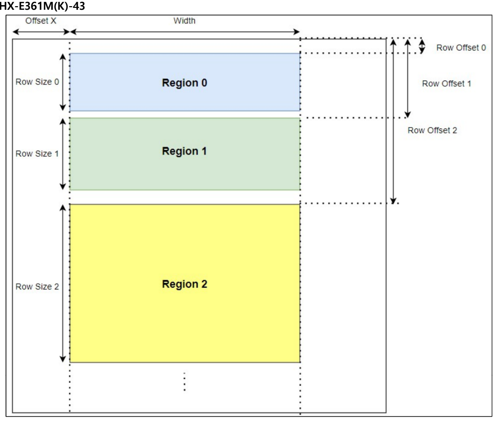
< 그림 4 - HX-E361M(K)-43 Multiple ROI Setting >
| XML Parameters | Description | |
|---|---|---|
| Image Format Control | ROIMode | ROISingle, ROIRow Mode 를 선택 |
| Width (1) | 이미지의 Width 값 | |
| OffsetX (1) | 이미지 ROI 영역의 Horizontal Offset 값 | |
| ROIRowSelector (2) | 이미지의 Region Selector(0~9) | |
| ROIRowEnable (3) | 해당 Region 의 Enable 여부 설정 | |
| ROIRowSize (4) | 해당 Region 의 Height 값 | |
| ROIRowOffset (4) | 해당 Region 의 Vertical Offset 값 | |
| ROIConfigResult (5) | Mutiple Region Config Result(Success, Fail) | |
(1) OffsetX, Width 값을 조정하여 전체 Region 의 OffsetX, Width 값을 조정할 수 있습니다.
(2) ROIRowSelector 를 통해 총 10 개 Region 을 선택하여 각 Region 의 Size, Offset 값을 개별 조정 합니다.
(3) ROIRowEnable 를 통해 해당 Region 의 실행여부를 조정하며, Region(n)을 비활성화 시 하위 Region(n+m)들은 자동으로 비활성화하게 됩니다.
(4) Region(n+1) offset 값은 Region(n) offset + size 값보다 크거나 같아야 합니다.
(5) (4)의 규칙에 맞지 않는 경우 Fail 메시지를 보여주며 설정된 값이 적용되지 않습니다.
4.1.3 Reverse X, Y
영상의 좌/우, 상/하를 변경하여 출력하는 기능입니다.
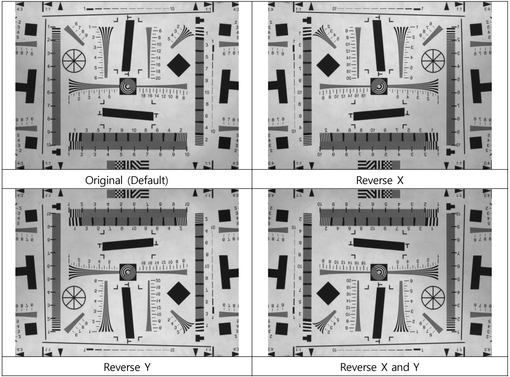
< 그림 5 - Reverse Image >
| XML Parameters | Description | |
|---|---|---|
| Image Format Control | ReverseX | False : 영상 반전 비활성화 (Default) True : Y 축 기준으로 영상 반전 |
| ReverseY | False : 영상 반전 비활성화 (Default) True : X 축 기준으로 영상 반전 | |
4.1.4 Pixel Format
카메라에서 출력되는 영상의 Format 을 변경 할 수 있는 기능입니다.
| Model | Format Support |
|---|---|
| HX-E671M, HX-E361M | Mono8 Mono10 |
| HX-E671K, HX-E361K | Bayer8, Bayer10, RGB8 |
< Table 3 - Pixel Format Values >
| XML Parameters | Description | |
|---|---|---|
| Image Format Control | PixelFormat | < Table 3 - Pixel Format Values > 참조 |
Pixel Format 별, Sensor Data 처리 방법은 아래와 같습니다.
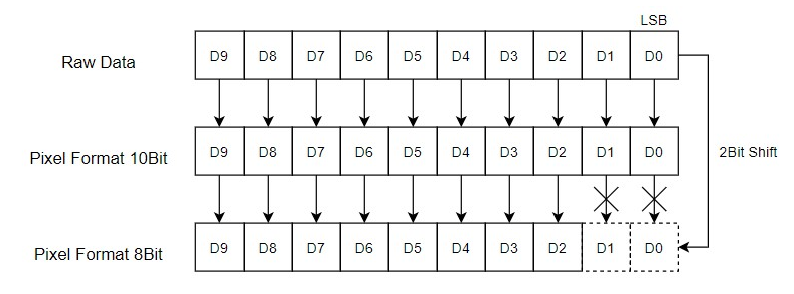
< 그림 6 - Pixel Format >
4.1.5 Test Pattern
카메라의 정상적인 동작을 확인하기 위해, 이미지를 대신한 Test Pattern 을 보여줍니다.
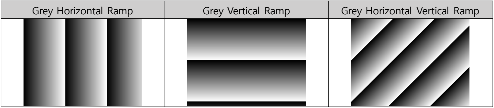
< 그림 7 - Test Pattern Image >
| XML Parameters | Description | |
|---|---|---|
| Image Format Control | TestPattern | Off : 카메라가 제공하는 패턴 이미지를 출력. (Default) GreyHorizontalRamp : 가로로 값이 균일하게 증가하는 패턴을 출력. GreyVerticalRamp : 세로로 값이 균일하게 증가하는 패턴을 출력. GreyHorizontalVerticalRamp : 대각으로 값이 증가하는 패턴을 출력. ※ < 그림 7 - Test Pattern Image >를 참고 |
4.2 Acquisition Control
4.2.1 Acquisition Control
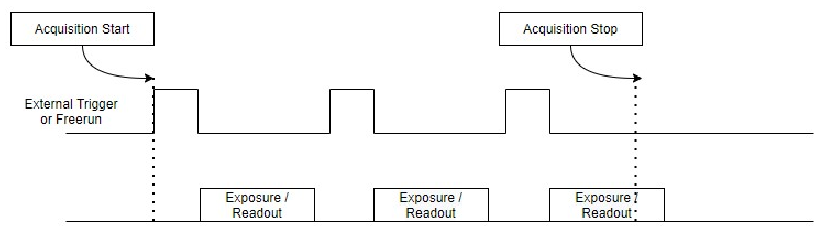
< 그림 8 - Acquisition Start/Stop >
| XML Parameters | Description | |
|---|---|---|
| Acquisition Control | AcquisitionMode (1) | 영상 Frame 을 취득하는 방식을 설정하는 항목. |
| AcquisitionStart | 영상 출력을 시작함. | |
| AcquisitionStop | 영상 출력을 멈춤. | |
(1) AcqusitionMode 는 Countinuous Mode 만 지원 ( AcquisitionStop 이전까지 계속 영상을 취득)
- AcquisitionStart Command 를 적용 시, 외부 External Trigger 또는, 내부 Freerun 에 따라 카메라가 영 상을 취득하며, 아래 XML 항목들은 이에 영향을 받습니다. (‘4.2.3 Trigger Mode Control’ 항목 참조)
| XML Parameters | Description | |
|---|---|---|
| Acquisition Control(4) | AcquisitionFrameRate (2) | AcquisitionFrameRateEnable Parameter 가 Enable 인 경우 설정된 AcquisitionFrameRate 속도로 영상 흭득 |
| AcquisitionFrameRateEnable (3) | AcquisitionFrameRate 조절 시 활성화 하며 비활성화 시 최대 Framerate 동작 | |
| ResultingFrameRate | 실제 카메라가 출력하는 FrameRate 를 표시 | |
(2) 해당 설정에서 출력 가능한 Freerun 상태의 최대 FrameRate 를 넘을 수 없습니다.
(3) TriggerMode = ‘On’ 적용 시, AcquisitionFrameRate 기능은 적용되지 않습니다.
(4) 기본 설정이 Exposure 우선 모드로서 ExposureTime 설정에 따라 Framerate 가 조절됩니다.
- Max.FrameTime = MAX(ExposureTime + FOT, ReadoutTime)
4.2.2 Exposure Control
카메라 노광 방식을 결정하는 기능입니다.
| XML Parameters | Value | Description | |
|---|---|---|---|
| Acquisition Control | ExposureMode | Default : Timed | Timed : 시간에 따른 노광시간 설정 Trigger Width : 외부 Trigger 의 Pulse 폭만큼 노광시간 설정. |
| ExposureTime(1) | 3 ~ 3,000,000 | 노광시간 입력 (Unit : us) | |
(1) Trigger Width 설정 시, ExposureTime 은 적용되지 않습니다.
- ExposureTime 은 노광시간을 설정하며, Timed 모드로 설정되어 있을 때만 적용됩니다.
- us 단위로 조절 가능합니다. (Range : 3us ~ 3,000,000us)
※ 실제 노광시간 : ExposureTime(설정시간) + Internal Exposure Offset(4.61us)
※ 최소 노광시간 : 7.61us = 3us(ExposureTime 최소시간) + 4.61us(Internal Exposure Offset)
※ Exposure Start Delay : 약 12us = Hardware Delay(약 2us) + Sensor Logic Delay(10.07us)
>> 관련 내용은 Appendix C 참조
- 외부 Trigger 의 Activation Start 가 Rising Edge 일 경우, Trigger 의 High Pulse 폭만큼 노광을 진행하며, Falling Edge 일 경우, Low Pulse 폭만큼 노광합니다. (’4.2.3 Trigger Mode Control’ 항목 참조)
| XML Parameters | Description | |
|---|---|---|
| Acquisition Control | ExposureAuto(2) | Off : ExposureTime 을 수동으로 설정. (Default) Once : 타겟에 맞는 밝기 값으로 Exposuretime 을 조절 후 Off. Continuous : 지속적으로 타겟 밝기에 맞게 ExposureTime 을 조절. |
(2) ExposureTime 변경에 따라 FrameRate 값이 변경될 수 있습니다. (Exposure 우선모드)
| XML Parameters | Value | Description | |
|---|---|---|---|
| Acquisition Control | AutoExposureTarget(3) | 0 ~ 255 | 이미지의 평균밝기 타겟을 설정함. (Unit : DN@8Bit) |
| AutoExposureTargetLowerLimit (4) | 100 ~ Upperlimit | ExposureAuto 시, 최소 Exposure 를 설정. | |
| AutoExposureTargetUpperLimit (4) | LowerLimit ~ 3,000,000 | ExposureAuto 시, 최대 Exposure 를 설정. | |
| ExposureUpdateFeature | Execute | ExposureTime 값을 수동으로 갱신 | |
(3) 사용자가 원하는 밝기 값을 설정할 수 있습니다.
(4) 해당 값 사이에서만 ExposureAuto 가 적용되며, 100 ~ 3,000,000 us (3sec) 까지 설정 가능합니다.
(4) LowerLimit 값은 UpperLimit 값보다 클수 없으며, UpperLimit 또한 LowerLimit 값보다 작을수 없습니다.
4.2.3 Trigger Mode Control
트리거 모드를 설정하는 항목입니다.
| XML Parameters | Description | |
|---|---|---|
| Acqusition Control | TriggerStart | Trigger 의 타입을 설정하는 항목. |
| TriggerMode | Off : Freerun 모드로 동작. On : Trigger 모드로 동작. | |
| TriggerSoftware | Software Trigger 수동 입력 | |
| TriggerSource | CXP_Trigger : Grabber 가 제공하는 트리거 Line 2 / Line 3 : 외부 트리거 Software : Software 함수를 이용한 트리거 | |
| TriggerActivation | Trigger 를 인식하는 Edge 선택 | |
| TriggerOverlap | Off : Readout 이 끝나기 전까지 Trigger 금지 ReadOut : Readout 도중 Trigger 인식 가능 (Default) | |
- TriggerStart 카메라가 Trigger 를 어떤 타입으로 인식하는지 정하는 항목입니다. 하나의 Trigger 에 여러 이미지를 취득하는 FrameBusrt Start/End, 노광에 관련된 Exposure Start/End 등의 항목이 있으며, 현 모델들은 하 나의 Trigger 에 한 장의 이미지를 취득 시작하는 FrameStart 로 고정되어 있습니다.
- TriggerMode Off : 카메라가 Freerun 모드로 동작합니다. 내부 Internal Trigger 모드로 동작하며, 주기는 Acquisition Frame Rate 로 조절 가능합니다. 만약 Acquisition Frame Rate Enable 함수가 Off 라면, 카메라는 현 환경 에서 동작할 수 있는 최대 Frame Rate 로 동작합니다.
On : 카메라가 External Trigger 모드로 동작합니다. TriggerSource 항목을 통해 사용하고자 하는 Source 를 선택할 수 있습니다.
- TriggerSource 트리거의 Source 를 정의합니다. TriggerMode 가 ‘On’일 시, 활성화 됩니다.
- CXP_Trigger : FrameGrabber 에서 Trigger 를 생성하여 CXP Cable 을 통해 카메라로 전달합니다.
- Line 2 / Line 3 : GPIO 4Pin 을 통해 트리거를 제공 받습니다. ( ‘3.5 External I/O Connector’ 참조 )
- Software : TriggerSoftware 함수를 통해 트리거를 생성합니다.
- TriggerActivation Trigger 가 Active 되는 Edge 를 나타내며 Rising Edge 로 고정되어 있습니다.
- TriggerOverlap Off : Readout 이 끝나기 전까지 입력된 Trigger 를 무시합니다.
ReadOut : Readout 도중 Trigger 입력을 허용하여 Overlap 이 되도록합니다.
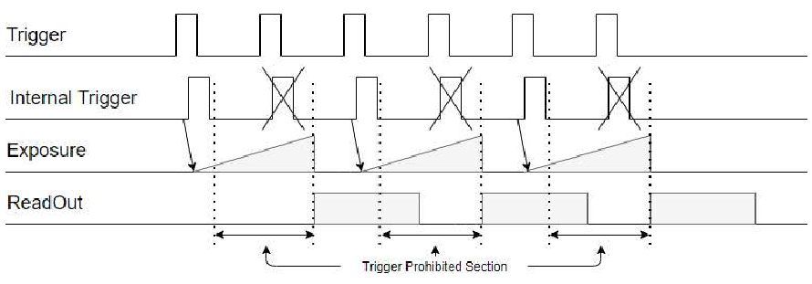
< 그림 9 - TriggerOverlap : ReadOut >
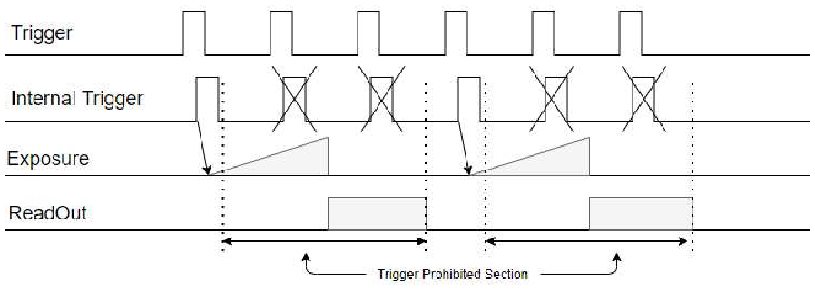
< 그림 10 - TriggerOverlap : Off >
| XML Parameters | Value | Description | |
|---|---|---|---|
| Acqusition Control | TriggerDelay | 0 ~ 3,000,000 | 입력한 Trigger 를 지연시키는 항목 (Unit : us) |
| LineDebounceTime | 0 ~ 882 | 외부 I/O 를 통과한 트리거 신호의 채터링 노이즈를 무시하는 기능을 가진 항목 (Unit : us) | |
- TriggerDelay 트리거 입력 후 사용자가 설정한 딜레이 시간만큼 지연 후, 동작하도록 설정하는 기능입니다. Delay 값 을 너무 과하게 설정하면 이미지 취득 관련 FrameRate 에 영향을 줄 수 있습니다.
- LineDebounceTime 외부 I/O 를 통과한 트리거 신호의 채터링 노이즈를 제거하는 기능입니다. 설정된 시간 이상의 Trigger Activation 구간만 인식할 수 있습니다.
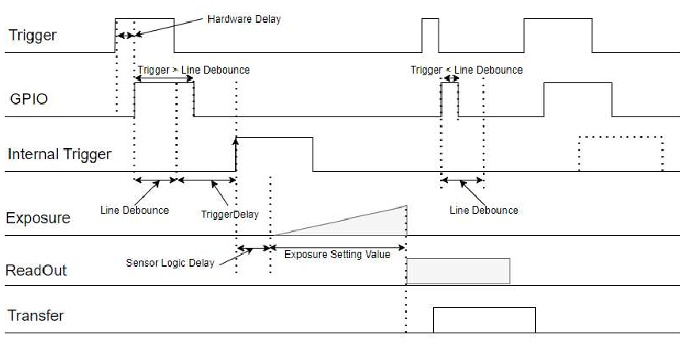
< 그림 11 - Trigger Delay & Line Debounce with Trigger Overlap Enable >
- 외부 Trigger 를 주입 시, I/O 구간을 통해 카메라로 들어가는 동안 Hardware Delay 가 발생합니다.
( Appendix B Hardware Time Delay 참조 )
- 입력된 Trigger 의 Activation 구간이 Line Debounce 구간을 초과하는지 확인한 후, User 가 설정한 Trigger Delay 만큼 지연시킨 내부 트리거를 생성합니다.
- 생성된 내부 트리거에 따라, 연산처리를 위한 Sensor 의 Logic Delay 가 발생한 후, 노광을 시작합니다.
( Appendix C Sensor Exposure Start Logic Delay 참조 )
- 카메라의 TriggerOverlap 설정 여부에 따라, ReadOut 을 진행하는 동안 트리거를 입력할 수 있습니다.
Trigger Activation 이 LineDebounce 구간보다 짧으면, < 그림 1 >과 같이 Trigger 가 무시됩니다.
4.2.4 Exposure Mode Timing
1) Freerun mode Timing(Internal Trigger)
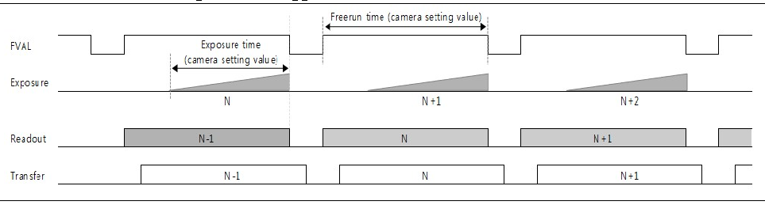
2) Trigger Timed mode Timing(Fixed)
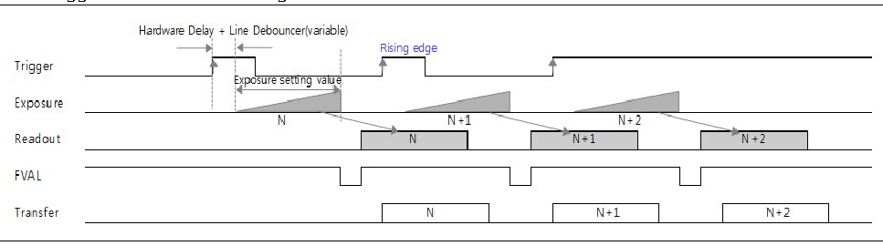
3) Trigger Width mode Timing(PWC)
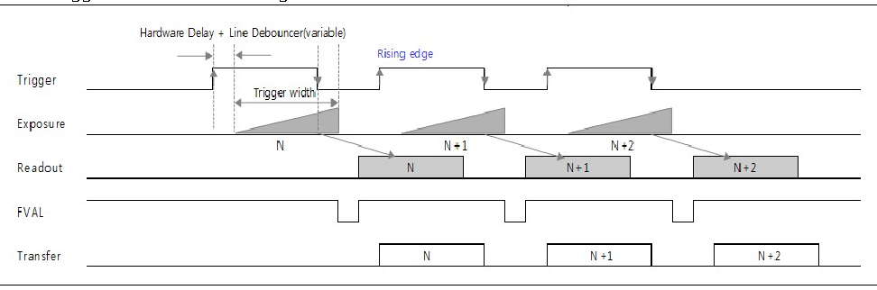
4.3 Digital I/O Control
외부 I/O 신호를 설정할 수 있는 기능입니다.
| XML Parameters | Value | Description | |
|---|---|---|---|
| Digital I/O Control | LineSelector | Line 1, Line 2, Line 3 | Line 1 : CXP_Trigger Line 2, Line 3 : 4pin I/O Connector(1) |
| LineMode | Input / Output | Input : 외부로부터 TriggerSignal 을 입력. Output : 외부로 StrobeSignal 을 출력. | |
| LineInverter | True / False | False : 입출력 Signal 의 위상을 0º로 변환 True : 입출력 Signal 의 위상을 180º로 변환 | |
| LineStatus | ReadOnly | 선택된 Line 의 상태를 반환. | |
| LineStatusAll | ReadOnly | 모든 라인의 현재 상태를 bit 로 반환. | |
| LineStatusUpdateFeature | - | 모든 라인의 현재 상태를 갱신함. | |
(1) 3.5 External I/O Connector 참조
- LineSelector 설정을 원하는 Line 을 선택하는 항목입니다.
- LineMode 설정한 Line 의 Mode 를 선택하는 항목입니다. Line 1 ( CXP_Trigger ) : FrameGrabber 에서 제공받은 트리거로서, 그 값은 Input 으로 고정되어 있습니 다.
Line 2 ( I/O ) : 카메라 외부 4Pin Connector 중 한 부분으로서, Input / Output 을 선택할 수 있습니다.
Line 3 ( I/O ) : 카메라 외부 4Pin Connector 중 한 부분으로서, Input / Output 을 선택할 수 있습니다.
- LineInverter 입출력 신호의 위상을 180º로 변환시켜 줍니다. ExposureMode 를 Trigger width 로 설정한 경우, Trigger Activation 구간의 폭이 변경되어, 영상의 밝기가 변할 수 있습니다.
- LineStatus 설정한 Line 의 현재 상태를 반환합니다. 갱신 기준 True 는 High, False 는 Low 상태를 말합니다. 만약, I/O Connector 가 연결되어 있지 않은 Floating 상태라면, Status 값은 High 로 반환됩니다.
- LineStatusAll 모든 Line 의 현재 상태를 4Bit 로 반환한 항목입니다.
Ex) LineStatusAll = 0xe
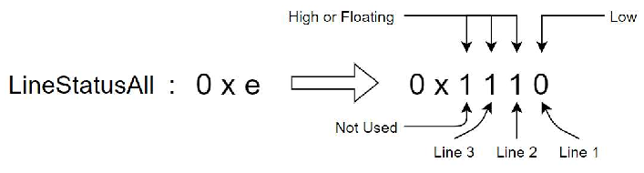
< 그림 12 - LineStatusAll Data Description >
- LineStatusUpdateFeature 모든 Line 의 상태를 실시간으로 갱신합니다.
| XML Parameters | Value | Description | |
|---|---|---|---|
| Digital I/O Control | LineSource | Off Timer1 Active Exposure Active UserOutput1 UserOutput2 | 출력할 파형을 선택함. |
| UserOutputSelector | UserOutput1 UserOutput2 | User 가 Software 로 직접 파형을 컨트롤 할 수 있는 용 도로 제공되는 설정. | |
| UserOutputValue | True / False | UserOutputSelector 의 값을 High, Low 로 설정함. | |
※ 위 XML Parameter 는 LineMode 가 Output 일 때만 활성화 됩니다.
- LineSource I/O Pin 을 통해 출력할 파형을 선택하는 항목입니다.
Off : Strobe 출력 비활성화 상태입니다.
Timer1 Active : 카메라 내부 Timer1 을 기준으로, Timer Control 파형을 출력합니다.
( 4.4.2 Timer Control 참고 )
Exposure Active : 실제 노광시간을 파형으로 출력합니다.
UserOutput1, 2 : UserOutputSelector 의 값을 설정하여 파형으로 출력합니다.
- UserOutputSelector Timer Active 또는 Exposure Active 로 인한 파형 출력이 아닌, User 가 직접 software 로 컨트롤하여 원하는 파형을 생성 후 출력할 수 있도록 제공된 항목입니다.
- UserOutputValue High(True) 또는 Low(False) 중 원하는 값을 선택하여 설정할 수 있습니다.
4.4 Counter and Timer Control
Strobe 신호 설정 및 카메라 동작 모니터링하는 기능입니다.
4.4.1 Counter Control
| XML Parameters | Value | Description | |
|---|---|---|---|
| Counter and Timer Control | CounterEventSource | ExternalTriggerStart ExposureStart ExposureEnd FrameEnd ExposureStartMissed ExposureEndMissed | 아래 설명 참조 |
| CounterValue | ReadOnly | 선택된 Source 의 이벤트 카운트값을 표기. | |
| CoutnerReset | Execute | 모든 CounterValue 를 0 으로 초기화. | |
| CounterUpdateFeature | Execute | 모든 CounterValue 를 수동으로 갱신. | |
- CounterEventSource 카메라 동작 모니터링을 위한 기능입니다. ExternalTriggerStart : 외부 Trigger Activation 횟수만큼 Count 값이 증가합니다.
ExposureStart : 노광을 시작한 횟수만큼 Count 값이 증가합니다.
ExposureEnd : 노광을 끝낸 횟수만큼 Count 값이 증가합니다.
FrameEnd : FVAL 갯수만큼 Count 값이 증가합니다.
ExposureStartMissed : 비정상적인 노광 시작 횟수만큼 Count 값이 증가합니다.
ExposureEndMissed : 비정상적인 노광 종료 횟수만큼 Count 값이 증가합니다.
- CounterValue 영상 취득 시, 발생하는 이벤트 카운트값을 표기합니다.
- CounterReset 모든 CounterEventSource 의 Value 값을 0 으로 초기화합니다.
- CounterUpdateFeature 모든 CounterEventSource 의 Value 값을 수동으로 갱신합니다..
4.4.2 Timer Control
| XML Parameters | Value | Description | |
|---|---|---|---|
| Counter and Timer Control | TimerSelector | Exposure External Trigger Internal VD | Exposure : 노광시작 시점을 선택. External Trigger : 외부 트리거 입력 시점을 선택 Internal VD : Freerun 모드에서 내부 트리거 리셋 시점을 선택. |
| TimerDuration | 0 ~ 3,000,000 | 출력하는 Timer 파형의 Pulse Width 를 정의하는 항목. (Unit : us) | |
| TimerDelay | (-10)0 ~ 3,000,000 | 출력하는 파형을 특정 시간만큼 지연시키는 항목. (Unit : us) | |
※ Digital I/O Control 의 Line Source 항목에서 Output 으로 설정하는 선행이 필요합니다.
- Timer Selector 생성할 Timer 의 Source 를 선택합니다. Exposure : 노광을 Source 로 선택합니다.
External Trigger : 외부 트리거를 Source 로 선택합니다.
Internal VD : Freerun 모드에서의 Internal VD 리셋 시점을 Source 로 선택합니다.
이 항목은 External Trigger 를 사용 시, 출력파형을 생성할 수 없습니다.
- TimerDuration Timer Signal 의 Pulse Width 폭을 조절합니다.
Pulse Width 폭에 따라 FrameRate 에 영향을 줄 수 있습니다.
- TimerDelay Timer Signal 의 발생 지연시간을 정의합니다. 기본적으로 Value 값의 범위는 0us ~ 3,000,000us 로 정해져 있습니다.
하지만 TimerSelector 를 Exposure 로 선택할 시, 범위는 마이너스로도 설정 가능합니다.
4.5 Analog Control
4.5.1 Gain Control
Gain 을 조정할 수 있는 기능입니다.
| XML Parameters | Value | Description | |
|---|---|---|---|
| Analog Control | GainSelector | All, DigitalAll | All : Sensor Analog Gain 을 선택. DigitalAll : 카메라 내부 Digital Gain 을 선택. |
| Gain | All : 1024 ~ 4095 DigitalAll : 0 ~ 3072 | 원하는 Gain 값을 Raw 하게 적용 할 수 있는 항목. | |
| GainAbs | All : x1.00 ~ x3.99 DigitalAll : x1.00 ~ x4.00 | 원하는 Gain 값을 배율로 적용 할 수 있는 항목. | |
| GainAuto | Off, Once, Countinuous | Off : Gain 수동 조절 Once : 한번 자동으로 타겟 밝기에 맞춰 Gain 조절 Countinuous : 지속적으로 타겟 밝기에 맞춰 Gain 조절 | |
| GainUpdateFeature | Execute | 설정한 현 Gain 값의 Value 를 갱신하는 항목. | |
- GainSelector 설정할 Gain 을 선택하는 항목입니다. Sensor 에서 제공하는 AnalogGain 과 카메라 내부 Logic 에서 제공하는 DigitalGain 2 가지로 나뉩니다.
- Gain 설정한 Gain 값을 Raw 하게 적용 할 수 있는 항목입니다.
- GainAbs 원하는 Gain 값을 배율로 적용할 수 있는 항목입니다. 원본 Image 의 밝기는 1 배로 규정하며, 이에 따 른 상대적인 배율을 입력해서 영상을 취득할 수 있습니다.
GainAbs = Gain / 1024 (1024 ≤ Gain ≤ 4095)
GainAbs = (1024 + Gain) / 1024 (0 ≤ Gain ≤ 3072)
- GainAuto Gain 값을 자동으로 조절할 수 있는 기능을 가진 항목입니다.
Off : Gain 값을 수동으로 설정합니다.
Once : 한번만 Gain 값을 조절하여 타겟에 맞는 밝기값으로 자동 조절합니다.
Continuous : 지속적으로 Gain 값을 조절하여 타겟에 맞는 밝기값을 유지합니다.
※ GainAuto 를 ExposureAuto 와 같이 쓸 경우, 우선 순위는 다음과 같습니다.
1) 밝기값이 증가해야 하는 경우, ExposureAuto 선 적용, GainAuto 후 적용
2) 밝기값이 감소해야 하는 경우, GainAuto 선 적용, ExposureAuto 후 적용
- GainUpdateFeature 현재 Gain 및 Gain Abs 값을 수동으로 갱신합니다.
4.5.2 Black Level Control
BlackLevel 을 조정할 수 있는 기능입니다.
| XML Parameters | Value | Description | |
|---|---|---|---|
| Analog Control | BlackLevelSelector | DigitalAll | 설정하고 싶은 Black Level 유형을 선택. |
| BlackLevel | 0 ~ 1023 | Black Level 값을 조정 | |
- BlackLevelSelector 센서에서 제공하는 BlackLevel 또는, 카메라 내부 로직에서 직접 조정가능한 Digital BlackLevel 을 선택 할 수 있습니다. 현 모델들은 Digital BlackLevel 만 컨트롤 할 수 있습니다.
- BlackLevel 선택한 BlackLevel 값을 조정할 수 있는 항목입니다.
4.5.3 Balance Ratio Control
RGB Color 의 Gain 을 조절할 수 있는 기능입니다.
| XML Parameters | Value | Description | |
|---|---|---|---|
| Analog Control | BalanceRatioSelector | Red, Green, Blue | 조절할 Color Gain 을 선택 |
| BalanceRatio | 0 ~ 7.99 | 선택한 Color Gain 의 값을 조절 | |
| BalanceWhiteAuto | Off, Once, Countinuous | Off : Color Gain 밸런스를 수동으로 조절 Once : Color Gain 을 조절하여 밸런스를 맞춘 후 Off Countinuous : 연속적으로 Color Gain 밸런스를 맞추는 항목 | |
| BalanceUpdateFeature | Execute | 현 Color Gain 값을 수동으로 갱신 | |
- BalanceRatioSelector Color Gain 을 조절할 Red, Green, Blue 를 선택하는 항목입니다.
- BalanceRatio 선택한 Color Gain 의 Value 값을 배율로 조절 할 수 있습니다. 기본 Image 는 Color Gain 이 1 로 설정 되어 있으며, 0 배부터 7.99 배까지 조절 가능합니다.
- BalanceWhiteAuto Color Gain 을 이용하여 자동적으로 화이트 밸런스를 맞춰주는 기능이 구현된 항목입니다.
Off : Color Gain 을 수동으로 조절 가능합니다.
Once : Color Gain 자동 조절하여 화이트 밸런스를 맞춘 후 Auto 기능을 Off 합니다.
Continuous : 연속적으로 Color Gain 을 조절하여 화이트 밸런스를 유지합니다.
- BalanceUpdateFeature 현재 선택된 Color Gain 의 값을 수동으로 갱신해주는 항목입니다.
4.5.4 Noise Reduction Filter
| XML Parameters | Value | Description | |
|---|---|---|---|
| Analog Control | NoiseReductionEnable | True, False | Noise Reduction Filter 를 활성화하는 항목 |
- NoiseReductionEnable 영상의 Noise 를 줄여줍니다. 활성화 시, Pixel 의 Noise 가 줄어들지만, Sharpness 가 다소 감소할 수 있습니다.
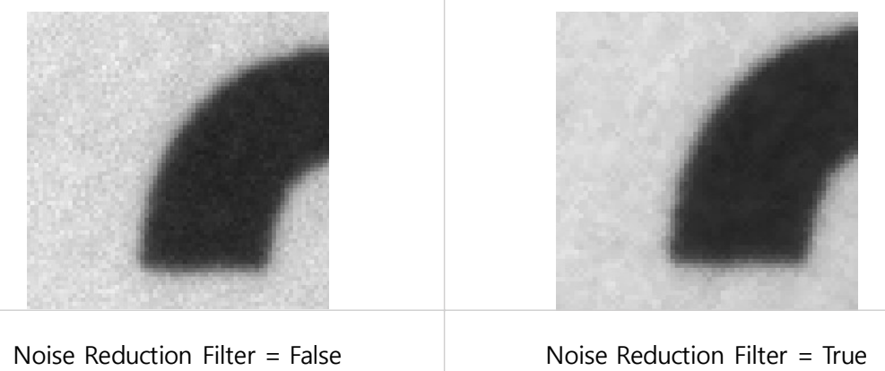
< 그림 13 - Noise Reduction Filter Enable >
4.6 LUT Control
User 가 영상밝기를 원하는 비선형 그래프으로 조정하기 위한 기능입니다.
| XML Parameters | Value | Description | |
|---|---|---|---|
| LUT Control | LUTEnable | False, True | LUT 기능 활성화 여부를 결정하는 항목 |
| LUTIndex | 0 ~ 16 | LUT 의 Index 값을 조절하는 항목 | |
| LUTValue | 0 ~ 1023 | 해당 LUT Index Point 값을 조정할 수 있는 항목 | |
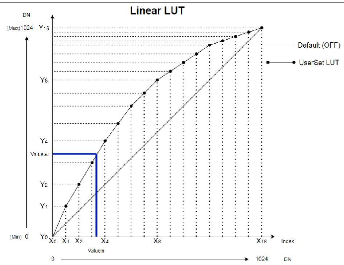
< 그림 14 - Linear Look Up Table >
- 센서의 밝기는 0 부터 1023 까지 10Bit Data 로 이루어져 있습니다. <그림 14>의 X(index)축은 이 10bit Data 를 16 등분으로 균등하게 분배 및 고정된 값들이며, 변경할 수 없습니다.
- 대신 Y 축(출력 DN 값)을 변경하고 두 Index 포인트 사이의 기울기를 계산함으로서, LUT 그래프가 완 성되어 적용이 가능합니다. 포인트간 그래프 완성식은 다음과 같습니다.
- = (( - ) × +1 + )
- +1
- Pixel Format 을 8bit 로 설정했을 경우, LUT 가 적용된 10bit 변환 Pixel Data 의 끝자리 2bit 를 제거한 8bit 를 Frame Grabber 에 전송합니다. ( ‘4.1.4 Pixel Format’ 참조 )
- 각 LUT Index Point 별, LUT 비활성화 및 Default 값은 아래와 같습니다.
| Index | 0 | 1 | 2 | 3 | 4 | 5 | … | 12 | 13 | 14 | 15 | 16 |
|---|
Index 0 1 2 3 4 5 … 12 13 14 15 16
| Value | 0 | 64 | 128 | 192 | 256 | 320 | … | 768 | 832 | 896 | 960 | 1024 |
|---|
< Table 4 - Default LUT Point Data >
4.7 Transport Layer Control
| XML Parameters | Value | Description | |
|---|---|---|---|
| Transport Layer Control | DeviceTapGeometry | Geometry_1X_1Y Geometry_1X_2YE | Scanning Format 을 설정하는 항목 |
| MultipleStream | OneStream TwoStream | 데이터 패킷의 Stream 수를 지정하는 항목 | |
- DeviceTapGeometry 데이터를 출력하기 위한 Scanning Format 을 설정하는 항목입니다. 해당 설정을 통해 데이터의 출력 패 턴을 지정합니다.
- MultipleStream 카메라에서 호스트에게 전송 전, 데이터 패킷의 Stream 수를 지정하는 항목입니다.
위 항목들의 자세한 설정 방법은 Appendix E 를 참조 바랍니다.
| XML Parameters | Value | Description | |
|---|---|---|---|
| CoaXPress | CxpLinkConfiguration | - | 하단 참조 |
- CxpLinkConfiguration 카메라에서 사용하는 CXP 모드 및 활성 링크 채널을 설정하는 항목입니다.
| Name | Bit Rate | Name | Bit Rate |
|---|---|---|---|
| CXP1_X1 | 1.25 Gbps | CXP6_X4 | 25 Gbps |
| CXP2_X1 | 2.5 Gbps | CXP12_X1 | 12.5 Gbps |
| CXP3_X1 | 3.125 Gbps | CXP12_X2 | 25 Gbps |
| CXP6_X1 | 6.25 Gbps | CXP12_X4 | 50 Gbps |
CXP 데이터 전송 모드에 따라 Bit Rate 값이 달라지며, Link(Lane)수 만큼을 곱한 값이 실제 초당 전송하 는 Bit Rate 로 계산 됩니다.
본 카메라 모델이 지원하는 모드는 다음과 같습니다.
| Model Name | Link Configuration |
|---|---|
| HX-E361M(K)-43 | CXP6_X4, CXP12_X2, CXP12_X4 |
| HX-E671M(K)-65 | CXP12_X4 |
4.8 Defect Pixel Correction
Defect Pixel 을 보정해주는 기능입니다.
| XML Parameters | Value | Description | |
|---|---|---|---|
| Defect Pixel Correction | DefectFilterEnable | Off, On | Defect 보정 기능을 활성화하는 항목 |
| DefectFilterTestMode | Off, Mark Black, Mark White, Mark White with Black Ground | 아래 내용 참조 | |
| DefectPixelReplaceCount | 1 ~ 8192 | 보정할 최대 픽셀 갯수를 정하는 항목 | |
| DefectPixelIndex | 0 ~ 8191 | 보정할 픽셀의 Index 값을 선택하는 항목 | |
| DefectXcoordinate | 0 ~ WidthMax | 보정할 픽셀의 X 좌표를 정하는 항목 | |
| DefectYcorrdinate | 0 ~ HeightMax | 보정할 픽셀은 Y 좌표를 정하는 항목 | |
| DefectPixelReplaceExecute | Execute | 수정된 Defect 보정 픽셀을 적용 및 갱신하는 항목 | |
- DefectFilterEnable Defect 보정 기능 활성화 여부를 선택하는 항목입니다.
- DefectFilterTestMode Defect Filter 가 적용된 Pixel 의 포지션을 확인하기 위한 항목입니다.
Mark Black : 보정된 포지션의 Pixel 을 DarkPixel 로 표시합니다.
Mark White : 보정된 포지션의 Pixel 을 WhitePixelfh 표시합니다.
Mark Whte with Black Background : Black Background 에 보정된 Pixel 을 WhitePixel 로 표시합니다.
- DefectPixelReplaceCount 보정할 최대 Pixel 개수를 정합니다.
- DefectPixelIndex Defect 픽셀을 지정 및 사용할 Index 값을 선택합니다.
- DefectXcoordinate 보정 할 Pixel 의 X 값을 입력합니다.
- DefectYcoordinate 보정 할 Pixel 의 Y 값을 입력합니다.
- DefectPixelReplaceExecute 입력 된 픽셀 포지션 Data 를 갱신 및 적용하는 항목입니다.
4.9 Flat Field Correction
촬상한 이미지의 밝기 값을 균일하게 보정하는 기능입니다.
| XML Parameters | Value | Description | |
|---|---|---|---|
| Flat Field Correction | FFCEnable | Off, On | FFC 보정 기능 활성화 여부 선택 |
| FFCInitialEnable | Off, On | 카메라 부팅 시, FFC Data Load 여부 선택 | |
| CalibrationImageCount | 1 ~ 4 | 보정할 이미지 갯수를 조절 | |
| FFCHighGainEnable | False, True | 보정 계수 최대치 활성화 여부 선택 | |
| FFCTargetLevel | 1.0 ~ 4.0 | 보정 타겟 계수 설정 | |
- FFCEnable FFC 보정 기능 활성화 여부를 선택합니다.
- FFCInitialEnable 카메라 부팅 시, FFC Data Load 여부를 선택할 수 있는 항목입니다.
FFC 기능을 사용하지 않을 시 부팅 시 FFC Data Load 기능을 비활성화 하여 부팅시간을 단축합니다.
※ FFCInitialEnable 시 부팅 시간은 약 1 분정도 소요되며 모델별, 설정별 상이합니다.
- CalibrationImageCount FFC 기능 적용 시, 보정할 이미지 갯수를 정할 수 있습니다. 보정할 이미지가 많을수록 더욱 정밀히 보정 가능하지만, 보정시간이 오래 걸릴수 있습니다.
※ 보정 시간은 최대 약 3 분~4 분 정도 소요되며 모델별, 설정별 상이합니다.
- FFCHighGainEnable Pixel 별 최대 보정 가능한 밝기 계수를 높이는 항목입니다. 기존 False 시, Pixel 별 보정 밝기는 최대 3 배를 넘을 수 없으며, 특수한 상황으로 그 이상의 보정을 원할 시, True 항목 변경 후 최대 5 배 밝기까 지 보정 할 수 있도록 활성화 할 수 있습니다.
- FFCTargetLevel White Calibration 적용 시, 평균 밝기에 TargetLevel 값을 곱한 기준으로 이미지를 보정합니다.
| XML Parameters | Value | Description | |
|---|---|---|---|
| Flat Field Correction | BlackCalibration | Execute | Black Calibration 을 진행하는 항목 |
| WhiteCalibration | Execute | White Calibartion 을 진행하는 항목 | |
| FFCSaveLoadFlashSelect | 0 ~ 3 | FFC Data 를 Save/Load 할 영역을 선택하는 항목 | |
| FFCSave | Execute | FFC Data 를 저장하는 항목 | |
| FFCLoad | Execute | FFC Data 를 불러오는 항목 | |
| FFCAbort | Execute | FFC 진행 도중 강제로 취소시키는 항목 | |
| FFCFunctionProcessStatus | ReadOnly | FFC 현 동작 상태에 대해 표현하는 항목 | |
| FFCUpdateFeature | Execute | FFC 동작 여부 상태를 갱신하는 항목 | |
- BlackCalibration 차폐된 환경에서 어두운 이미지를 흭득하여 FPN 을 보정합니다.
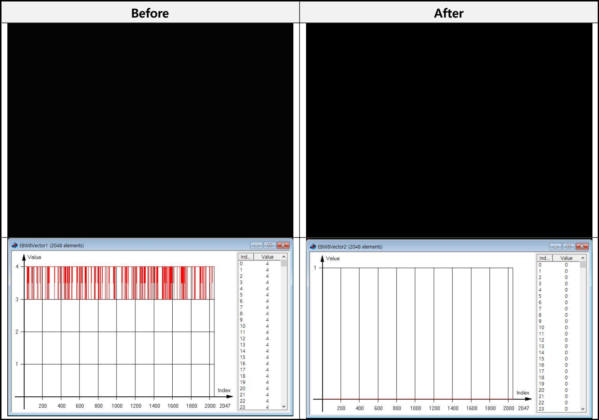
< 그림 15 - BlackCalibration >
- WhiteCalibration 실환경에서 밝은 이미지를 흭득하여 PRNU 를 보정하는 항목입니다.
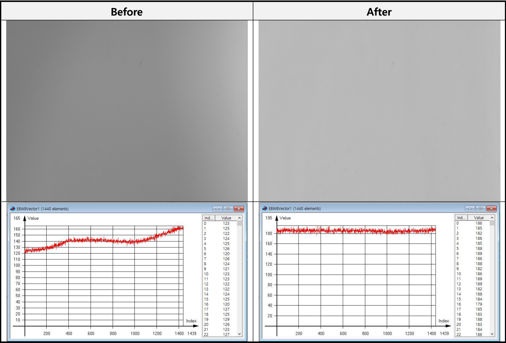
< 그림 16 - WhiteCalibration >
카메라로 균등한 밝기의 회색 물체를 취득 후, 이미지 센서의 가장자리 쉐이딩 or 기타 다른 환경들에 의한 밝기의 차이를 위 표처럼 보정합니다.
- FFCSaveLoadFlashSelect FFC Data 를 읽고 쓸 저장영역을 선택하는 항목입니다.
- FFCSave 선택된 메모리 영역에 FFC Data 를 저장합니다.
- FFCLoad 선택된 메모리 영역의 FFC Data 를 불러옵니다.
- FFCAbort FFC 수행 중 강제 취소할 수 있는 항목입니다.
- FFCFunctionProcessStatus FFC Function 동작 상태를 확인 할 수 있습니다.
| Status | Description |
|---|---|
| Complete | FFC 보정 완료 |
| GetBlackImage | 어두운 이미지 흭득 중 |
| GetWhiteImage | 밝은 이미지 흭득 중 |
| BlackCalibrating | FPN 보정 중 |
| WhiteCalibrating | PRNU 보정 중 |
| FFCErasing | FFC Data 삭제 중 |
| FFCSaving | FFC Data 저장 중. |
| FFCLoading | FFC Data 로드 중 |
< Table 5 - FFC Function Process Status >
- FFCUpdateFeature 현재 진행중 또는 FFC 동작 여부 상태를 수동을 갱신합니다.
| XML Parameters | Value | Description | |
|---|---|---|---|
| Flat Field Correction | FPNDefectFilterEnable | Off, On | FPN Threshold 값에 따라 Defect 을 보정하는 항목. |
| FPNDefectFilterThreshold | 0 ~ 127 | Defect 보정 할 Threshold 값을 정하는 항목 | |
※ FPNDefectFilter 기능은 FFC Data 를 기반으로 동작합니다.
- FPNDefectFilterEnable FPN Threshold 에 따라 Defect 값을 보정합니다.
- FPNDefectFilterThreshold FPN Threshold 값을 정해주는 항목입니다.
4.10 User Set Control
사용자가 설정한 값을 저장 또는 로드할 수 있는 기능입니다.
| XML Parameters | Value | Description | |
|---|---|---|---|
| User Set Control | UserSetSelector | Default, Userset1, Userset2, Userset3. | 저장/로드 할 Flash Memory 영역을 선택하는 항목 |
| UserSetLoad | Execute | 선택한 Userset 항목의 설정을 불러오는 항목(1) | |
| UserSetSave | Execute | 선택한 Userset 항목의 설정을 저장하는 항목(1) | |
(1) Save / Load 가 가능한 XML 항목은 Appendix D UserSet Saveable & Loadable XML Item List 참조
- UserSetSelector Camera Setting Parameter 가 저장된 Memory 영역을 선택합니다.
Default : Read Only 로 읽기만 가능하며, 카메라 세팅이 기본값으로 초기화 됩니다.
Userset1-3 : User 가 Setting 값을 저장/로드 할수 있는 영역입니다.
- UserSetLoad 선택한 영역에 저장된 카메라 설정값을 로드합니다.
- UserSetSave 카메라 설정값을 선택한 영역에 저장합니다.
Appendix A Maximum Frame Rates
이미지 사이즈(PixelFormat 포함) 및 CXP 채널, 속도에 따라 Max.Framerate 이 달라집니다.
PixelFormat = 8Bit
| ROI Size (H x V) | CXP12 x 4Ch | ROI Size (H x V) | CXP12 x 4Ch |
|---|---|---|---|
| 1920 x 1080 | 481.00fps | 8192 x 2048 | 257.13fps |
| 3840 x 2160 | 243.96fps | 8192 x 4096 | 129.55fps |
| 4096 x 4096 | 129.55fps | 8192 x 8192 | 65.02fps |
PixelFormat = 10Bit
| ROI Size (H x V) | CXP12 x 4Ch | ROI Size (H x V) | CXP12 x 4Ch |
|---|---|---|---|
| 1920 x 1080 | 297.17fps | 8192 x 2048 | 158.60fps |
| 3840 x 2160 | 150.48fps | 8192 x 4096 | 79.84fps |
| 4096 x 4096 | 79.84fps | 8192 x 8192 | 40.05fps |
< Table 6 - Maximum Frame Rate HX-E671M(K)-65 >
| ROI Size (H x V) | CXP12 x 4Ch | ROI Size (H x V) | CXP12 x 4Ch |
|---|---|---|---|
| 1920 x 1080 | 244.43fps | 6144 x 1536 | 172.50fps |
| 3840 x 2160 | 123.00fps | 6144 x 3072 | 86.64fps |
| 3072 x 3072 | 86.64fps | 6144 x 6144 | 43.41fps |
| ROI Size (H x V) | CXP12 x 2Ch | ROI Size (H x V) | CXP12 x 2Ch |
|---|---|---|---|
| 1920 x 1080 | 244.43fps | 6144 x 1536 | 106.36fps |
| 3840 x 2160 | 123.00fps | 6144 x 3072 | 53.38fps |
| 3072 x 3072 | 86.64fps | 6144 x 6144 | 26.74fps |
| ROI Size (H x V) | CXP6 x 4Ch | ROI Size (H x V) | CXP6 x 4Ch |
|---|---|---|---|
| 1920 x 1080 | 244.43fps | 6144 x 1536 | 106.36fps |
| 3840 x 2160 | 123.00fps | 6144 x 3072 | 53.38fps |
| 3072 x 3072 | 86.64fps | 6144 x 6144 | 26.74fps |
< Table 7 - Maximum Frame Rate HX-E361M(K)-43 >
Appendix B Hardware Time Delay
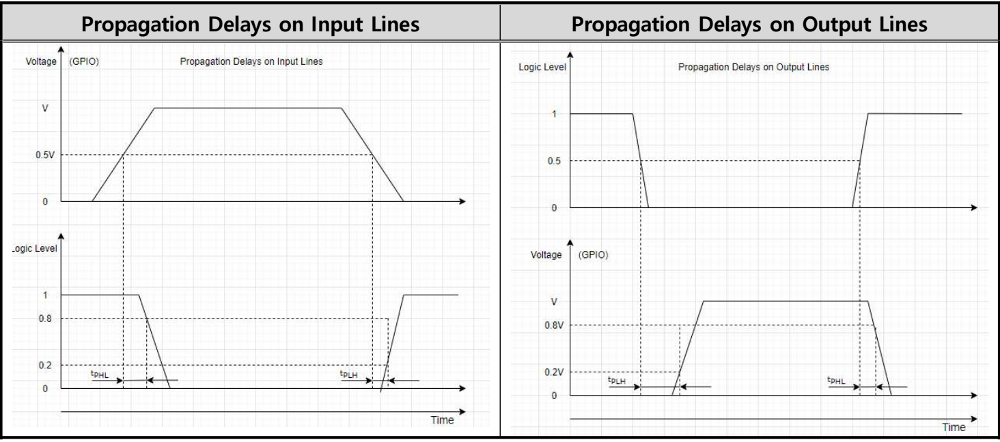
| Rising (t ) ( < 20% ) PLH | Falling (t ) ( > 80% ) PHL | |
|---|---|---|
| Input Line | 0.52 us | 0.03 us |
| Output Line | 1.34 us | 0.17 us |
※ TTL 및 소자간 차이로, 각 카메라마다 위 표의 값의 오차가 존재할 수 있습니다.
Appendix C Exposure Start / End Delay
노광을 시작하기 까지 걸리는 하드웨어, 센서 로직 처리 시간이 필요합니다.
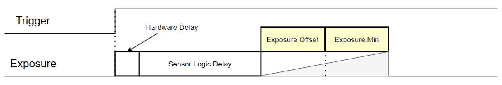
- Exposure Start Delay = Hardware Delay + Sensor Logic Delay(10.07us)
- Exposure End Delay = Exposure Start Delay + Exposure Offset(4.61us) + Exposure.Min(3us)
※ Hardware Delay 는 < Appendix B Hardware Time Delay > 를 참고바랍니다.
Appendix D UserSet Saveable & Loadable XML Item List
User Set Save/Load 가 적용되는 XML 항목을 정리하면 다음과 같습니다.
| XML Parameters | Save / Load | Description | |
|---|---|---|---|
| Image Format Control | Width | O | |
| Height | O | ||
| OffsetX | O | ||
| OffsetY | O | ||
| ReverseX | O | ||
| ReverseY | O | ||
| PixelFormat | X | ||
| TestPattern | O | ||
| Acquisition Control | AcquisitionFrameRate | O | |
| AcquisitionFrameRateEnable | O | ||
| ExposureMode | O | ||
| ExposureTime | O | ||
| ExposureAuto | X | ||
| AutoExposureTarget | O | ||
| AutoExposureTimeLowerLimit | O | ||
| AutoExposrueTimeUpperLimit | O | ||
| TriggerSelector | - | Selector | |
| TriggerMode | O | ||
| TriggerSource | O | ||
| TriggerOverlap | O | ||
| TriggerDelay | O | ||
| LineDebounceTime | X | ||
| Digital I/O Control | LineSelector | - | Selector |
| LineMode | O | ||
| LineInverter | O | ||
| LineSource | O | LineMode = Output 일 때, | |
| UserOutputSelector | - | Selector | |
| UserOutputValue | O | ||
| Counter and Timer Control | CounterEventSource | X | |
| TimerSelector | O | ||
| TimerDuration | O | ||
| TimerDelay | O | ||
| Analog Control | GainSelector | - | Selector |
| Gain | O | ||
|---|---|---|---|
| GainAbs | O | ||
| GainAuto | X | ||
| BlackLevelSelector | - | Selector | |
| BlackLevel | O | ||
| NoiseReductionEnable | O | ||
| LUT Control | LUTEnable | O | |
| LUTIndex | - | Selector | |
| LUTValue | O | ||
| Transport Layer Control | DeviceTapGeometry | O | |
| MultipleStream | O | ||
| Defect Pixel Correction | DefectFilterEnable | O | |
| DefectFilterTestMode | X | ||
| DefectPixelReplaceCount | O | ||
| DefectPixelIndex | - | Selector | |
| DefectXCoordinate | O | ||
| DefectYCoordinate | O | ||
| Flat Field Correction | FFCEnable | X | |
| FFCInitial Enable | O | ||
| CalibrationImageCount | X | ||
| FFCHighGainEnable | O | ||
| FFCTarget Level | O | ||
| FFCSaveLoadFlashSelect | - | Selector | |
| FPNDefectFilterEnable | O | ||
| FPNDefectFilterThreshold | O |
Appendix E F/G 제조사 별, Packet & Stream 설정 방법
- Euresys 社 Camera 연결 후, 해당 모델 연결 확인.
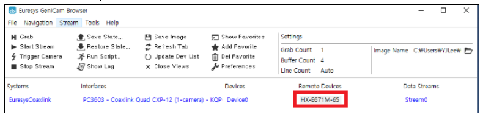
OneStream 방식의 경우,
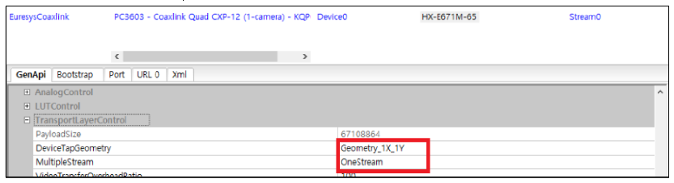
Remote Device 의 Model name 클릭 후, Tranport Layer Control 항목에서,
- DeviceTapGeometry 를 ‘Geometry_1X_1Y’ 로 설정
- MultipleStream 를 ‘OneStream’ 으로 설정
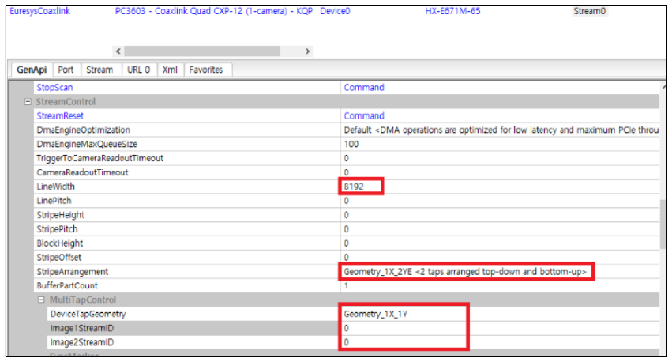
Data Stream 의 Stream 클릭 후, Stream Control 에서,
- LineWidth 를 Width 와 같은 Size 로 설정. ( PixelFormat 8Bit 이외에는 Camera 의 Width * 2 로 설정)
- StripeArrangement 를 ‘Geometry_1X_2YE ’ 로 설정.
- DeviceTapGeometry 를 ‘Geometry_1X_1Y’ 로 설정.
- Image1StreamID 를 ‘0’로, Image2StreamID 를 ‘0’로 설정.
TwoStream 방식의 경우,
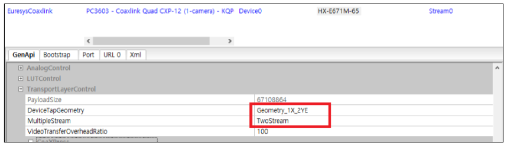
Remote Device 의 Model name 클릭 후, Tranport Layer Control 항목에서,
- DeviceTapGeometry 를 ‘Geometry_1X_2YE ’ 로 설정
- MultipleStream 를 ‘TwoStream’ 으로 설정
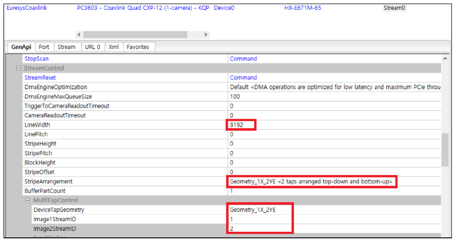
Data Stream 의 Stream 클릭 후, Stream Control 에서,
- LineWidth 를 Width 와 같은 Size 로 설정. ( PixelFormat 8Bit 이외에는 Camera 의 Width * 2 로 설정)
- StripeArrangement 를 Geometry_1X_2YE 로 설정.
- DeviceTapGeometry 를 Geometry_1X_2YE 로 설정.
- Image1StreamID 를 ‘1’로, Image2StreamID 를 ‘2’로 설정.
- Matrox 社 ※ One Stream 지원하지 않음 TwoStream 방식의 경우,
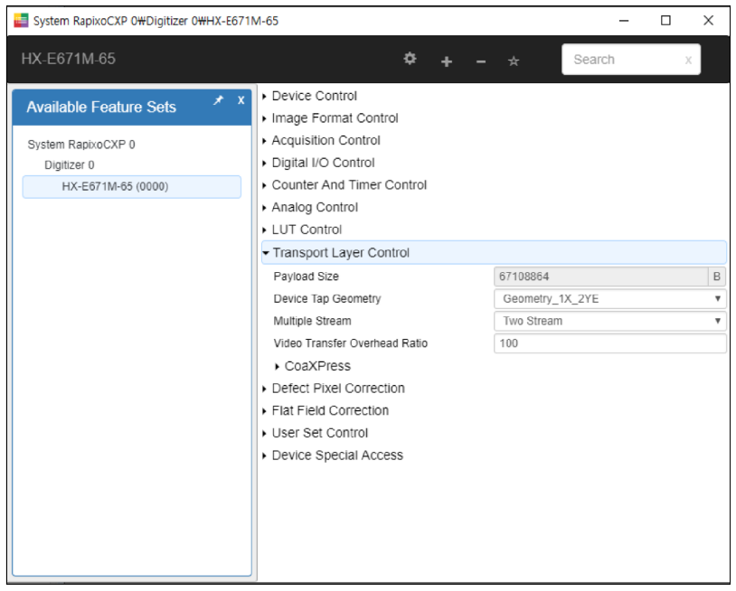
Tranport Layer Control 항목에서,
- DeviceTapGeometry 를 Geometry_1X_2YE 로 설정
- MultipleStream 를 TwoStream 으로 설정 ※ 이외, 타 社 F/G 호환 여부 및 설정 방법은 대리점 및 기술지원팀에 문의 바랍니다.
Revision History
| Revision | Date | Changes | Remark |
|---|---|---|---|
| 1.0 | 2021.05.26 | 제정 | |
| 1.1 | 2021.02.08 | Multiple ROI 항목 추가 | |
| 1.2 | 2022.11.16 | - “4.1.4 CXP Link Configuration” 항목 삭제 및 이하 목차 변경 - “4.7 Transport Layer Control” 항목 추가 및 이하 목차 변경. - “Appendix EF/Grabber 제조사 별,Packet &Stream 설정 방법” 추가 (HX-E671x) | |
| 1.3 | 2025.05.22 | 3.5 External I/O Connector Table 변경 |
Contact
Product Inquiry(Sales)
=================================================================== Tel : +82-31-899-4503 +82-31-899-4504 +82-31-899-4507 Fax: +82-31-899-4509 sh_lee@crevis.co.kr dkahn@crevis.co.kr mysung@crevis.co.kr Technical Support ================================================================== Tel : +82-31-899-4567 tjmoon@crevis.co.kr 29-4, Gigok-ro, Giheung-gu, Yongin-si, Gyeonggi-do, Korea www.crevis.co.kr